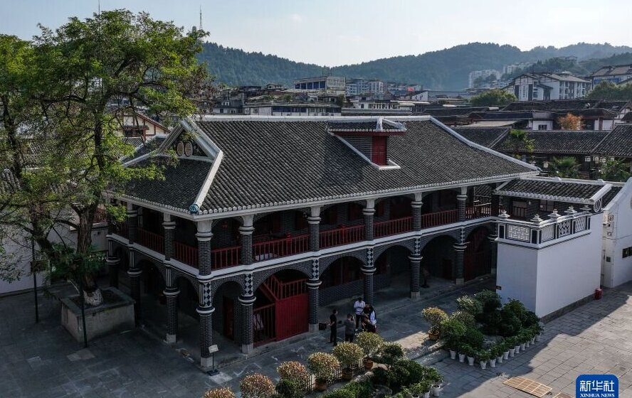
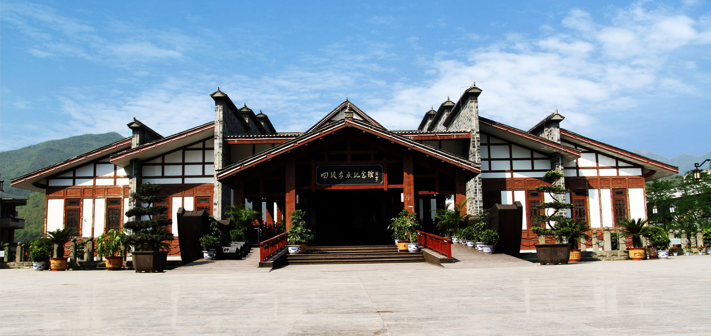

来源：学习强国
广西全州 · 湘江战役纪念园
对应事件：湘江战役，包含湘江战役纪念馆、烈士纪念碑、红军长征渡口遗址。
Red Heritage Sites
了解具有代表性的党史教育基地和革命纪念地，以地域为线索串联红色记忆。
Distribution Map
以中国地图为空间底图，串联不同历史阶段的重要革命基地，帮助读者从地域分布中理解红色足迹的整体脉络。
当前地图用于展示重点基地的分布关系，点位为学习示意。点击长征路线上的红星，可查看按长征主线估算的累计行军里程。
地图底图来源： cn-atlas / provinces.json ，授权协议 ISC License。底图包含台湾省与南海诸岛。
Long March Landmarks
沿长征行军路线梳理具有代表性的历史现场和纪念地，从出发、转折、突破到胜利会师，构建连续的红色学习线索。
对应事件：湘江战役，包含湘江战役纪念馆、烈士纪念碑、红军长征渡口遗址。

来源：新华社对应事件：遵义会议，核心纪念馆，长征转折标志性红色地标。

来源：四渡赤水纪念馆官网对应事件：四渡赤水，包含土城战役遗址、赤水红军渡口。
对应事件：巧渡金沙江，金沙江渡江旧址。
对应事件：强渡大渡河、飞夺泸定桥，泸定桥旧址。
对应事件：翻越雪山，夹金山长征遗址。
对应事件：跋涉松潘草地，草地长征纪念遗址。
对应事件：长征胜利会师，会宁会师旧址。
Value & Function
革命旧址和纪念场馆不仅是历史现场的保存者，也是开展党史教育、精神传承和公共文化服务的重要空间。
长征沿线红色基地是新时代开展党史学习教育最鲜活的实景课堂，为广大青少年和社会群众学习党史、感悟党史提供了宝贵的实体载体。传统书本教学以文字叙述为主，内容抽象，而红色旧址、战场遗址和革命场馆能够以实景、实物重现长征艰苦卓绝的奋斗历程，让党史学习走出课本、走入现场、直抵人心。
每一处红色基地都对应一段重大党史事件。湘江战役纪念园展现红军浴血突围的悲壮历程，遵义会议会址见证中国革命伟大转折，泸定桥、皎平渡等旧址再现红军勇闯天险的英雄壮举，会宁会师场馆完整呈现长征胜利的伟大荣光。依托红色基地开展现场教学，能够有效增强党史教育的感染力与说服力，引导新时代青年知史爱党、知史爱国，坚定理想信念，筑牢思想根基。
长征精神是中国共产党人精神谱系的重要组成部分，而遍布沿线的红色基地，正是长征精神最坚实、最直观的传承载体。岁月流逝、硝烟散尽，留存至今的革命旧址、战斗遗迹、烈士丰碑和珍贵文物，依然无声诉说着红军将士跨越千山万水、战胜千难万险的伟大征程。
红色基地以空间承载记忆，以遗址见证精神。翻越雪山的苦寒绝境、穿越草地的生死考验、突破江河天险的无畏冲锋，都定格在一处处历史现场之中。参观者驻足遗址、凝视文物、回望历史，能够跨越时空与革命先辈对话，真切感悟坚定信念、不怕牺牲、实事求是、团结奋进的崇高长征精神。在新时代背景下，红色基地持续承担着精神育人、铸魂育人的重要使命，不断将抽象的精神内涵转化为可感知、可学习、可践行的精神力量，让伟大长征精神永葆时代光芒。
长征沿线红色基地资源丰富、脉络完整、场景真实，是开展青少年红色研学、思政实践、素质教育的优质阵地，具备极高的社会实践育人价值。不同于课堂理论教学，红色基地研学以行走学习、实景体验、实地探究为核心形式，能够有效弥补传统教育的短板，实现理论与实践、知识与感悟、历史与现实的深度融合。
各地红色基地结合长征历史脉络，开发了系统化、特色化的研学课程，涵盖历史寻访、遗址考察、故事聆听、团队实践等内容。学生通过实地走访湘江战役旧址、遵义会议会址、泸定桥遗址等红色地标，亲身感受长征路途的遥远、环境的恶劣和胜利的来之不易。沉浸式的研学实践能极大提升青年学生的历史认知与家国情怀，推动红色文化进校园、进心灵，引导青少年自觉传承红色基因、树立远大理想，将爱国情、强国志、报国行融入日常成长之中。
长征沿线红色基地是重要的公共文化载体，承担着红色文化传播、公共文化服务供给与地域文化形象塑造的多重功能，让厚重的长征历史走出场馆，融入大众的文化生活之中。作为公益性文化空间，红色基地面向全社会免费开放，为广大群众提供普惠性的红色文化服务。
红色基地依托主题展览、文献出版物、专题宣讲等形式，系统传播长征历史文化。场馆常设的文物展、专题图片展直观再现长征征程，配套出版的史料书籍、画册把红色历史固化为可传阅的文化资料。同时，大量青年志愿者加入红色讲解队伍，拓展红色文化的传播边界。在城市形象塑造层面，湘江战役纪念园、遵义会议会址、会宁会师旧址等红色地标已成为地方特色文化名片。借助短视频、线上云展馆、纪录片等新媒体手段，红色基地打破地域限制，实现跨区域的广泛社会传播，持续扩大长征文化的社会影响力，实现红色文化代代传扬。
Reuse in a New Era
在保护历史真实性的前提下，通过数字技术、教育服务和区域协作，让红色资源更自然地融入今天的公共文化生活。
数字化展陈是红色基地活化利用的重要方式。在坚守历史真实性的前提下，基地建立红色数字档案，对文物、史料进行数字化保存。
依托虚拟展厅、线上导览，打破场地局限，让大众可以云端参观长征旧址。建设过程中严格统一数据标准，落实内容审核，保障史料严谨可靠。同时兼顾无障碍访问，增设语音朗读等功能，方便各类人群使用，有效拓宽红色文化的传播途径。
来源：AI生成沉浸式体验借助场景复原、互动装置和多媒体叙事，创新红色基地学习形式。通过场景还原重现长征关键历史片段，把静态展品转化为可感知的历史环境，提升参观代入感。
项目设计严守历史底线，杜绝戏说历史，合理把控体验边界。同时遵循未成年人保护原则，适度处理战争场景展示尺度。沉浸式体验让长征故事更加鲜活，增强红色教育的感染力。
来源：AI生成主题线路依托长征行军路线，推动跨区域红色资源联动。串联广西、贵州、四川、甘肃沿线红色基地，打造一体化长征研学线路，统筹规划主题方向、行程时长、交通组织与配套服务。
打破地域壁垒，整合分散的遗址场馆资源，形成完整的长征叙事链条。连贯的寻访路线，为研学团队和游客提供完整的长征历史体验，助力红色研学与红色文旅协同发展。
来源：AI生成文创开发、志愿服务与社区共建，引导社会力量参与红色资源活化。基地挖掘长征文化元素，开发兼具内涵与实用性的文创产品；组建志愿宣讲队伍，吸纳青年参与红色故事传播。
基地积极联动周边社区、学校开展共建活动，推动红色文化走进基层。项目坚守公益属性，规范品牌运营，开展社会效益评估，防止过度商业化，凝聚全社会传承红色文化的力量。
来源：AI生成